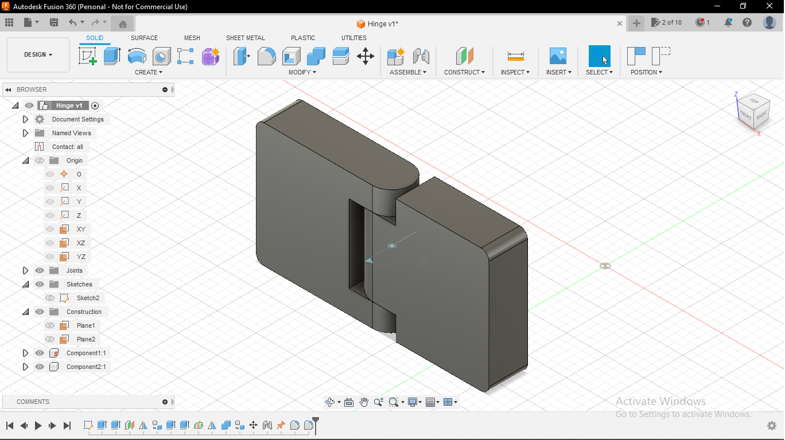

CAD - 3D Hinge Mechanism Design in Fusion 360
This CAD project focuses on creating a 3D hinge mechanism
using Autodesk Fusion 360, a powerful 3D modeling and design software. The project aims
to design a versatile and functional hinge mechanism that can be used in various
applications, such as doors, cabinets, or mechanical assemblies.
Key Project Objectives:
1. Design a robust and aesthetically pleasing hinge mechanism.
2. Ensure precise and smooth movement of the hinge components.
3. Optimize the hinge for strength, durability, and ease of assembly.
4. Utilize Fusion 360's parametric design capabilities to easily customize the hinge for
different applications.
5. Create detailed 3D models and assembly animations to visualize the hinge's
operation.
Through this project, I will showcase Fusion 360's capabilities in designing and
simulating mechanical components, from concept to a fully functional 3D model. The final
design will be a valuable resource for engineers, designers, and DIY enthusiasts looking
to integrate a reliable hinge mechanism into their projects.